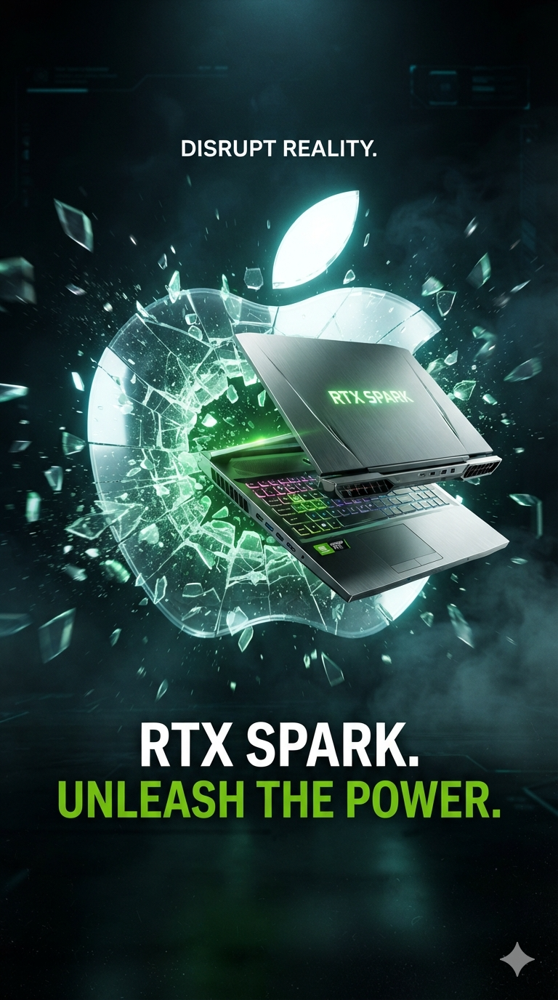

Le tueur de Macbook

Apple à du soucis à se faire ! Dans cette article je vais vous présenter le tueur des MacBook et si comme moi vous êtes anti apple mais que vous voulez avoir un MacBook, lisez cette article jusqu'à la fin !
Présentation du sujet
Nvidia révolutionné la façon de créer les pc. Ils peuvent et vont rivaliser avec les MacBook d’Apple grâce à leur futur pc qui à été présenté au GTC Taipei de Nvidia, pendant le Computex.
Les specs & annonces clés
- Deux versions de la puce :
- Le N1X 675 (haut de gamme) GPU avec l'architecture Blackwell 6 144 cœurs CUDA et 20 cœurs CPU
- Le N1X 650 (version moins performante) GPU avec l'architecture Blackwell 5 120 cœurs CUDA et de 18 cœurs CPU
- Jusqu'à 128 Go de RAM unifiée LPDDR5X
- Système d'exploitation Windows 11
- Consommation d'environ 80W
- PC destiné à une utilisation d’IA local au lieu du cloud
- Différentes marques disponibles grâce au partenariat avec Nvidia
- J'aime utiliser l’IA d’Antropic Claude au quotidien et plein d'autres IA pour des tâches plus professionnelle. Grâce à ce PC je pourrais tout faire en local.
Mon analyse perso AVIS PERSO
- Les puces : Nvidia souhaite proposer 2 puces.
- Une puce premier prix pour pouvoir proposer des PC pas chère. Cette première option d'après moi est destinée aux personnes souhaitant utiliser des IA telles que Claude Ai, Chatgpt, Gemini au quotidien en local. C'est très utile pour des utilisations hors connexion ou pour travailler sur des projets sensible sans envoyer vos données sur des serveurs américains.
- La seconde puce qui elle se place sur un segment haute gamme est là pour en découdre ! Si vous êtes développeur d’IA local ou que vous souhaitez juste avoir le top du top pour créer du contenu, jouer à des jeux AAA sans limite, c'est cette version qu'il vous faut. Jusqu'à 1 pétaflop en FP4 et 128 Go mémoire unifiée, Nvidia veux faire de ce PC votre nouvel assistant personnel !
- Nvidia à fait le choix d'utiliser de la LPDDR5X parce qu'elle permet une grosse quantité de mémoire unifiée (128 Go) partagée entre CPU et GPU. La ram est soudée directement sur la carte mère (pas de barrettes interchangeables), donc au plus près du processeur. Elle est "Low Power", ce qui signifie qu'elle à une tension très basse (~0,5V), pensée pour l'autonomie des appareils mobiles. Le bus mémoire plus large en pratique dans les configs comme le GB10 (mémoire unifiée CPU+GPU) donne une bande passante totale élevée (environ 273 Go/s pour le DGX Spark). La RAM est très efficace énergétiquement, mais non évolutive (ce que tu achètes à l'achat, c'est ce que tu gardes)
- Nvidia à choisi de créer des puces avec mémoire unifiée (CPU + GPU) à l'instar d’Apple avec ses puces M. La comparaison peut être tentante car les puces unifiée permettent d'avoir un pool unifié accessible simultanément par le CPU et au GPU mais les deux puces ont des philosophes différentes. Apple à l'avantage sur la bande passante mémoire, la capacité maximale et l'efficacité énergétique alors que NVIDIA écrase en calcul IA brut (FP4/tenseurs) et bénéficie de l'écosystème CUDA quasi-universel dans la recherche IA.
- Windows 11 vs iOS ! Le grand dilemme se joue ici car avec ses PC sous Windows Nvidia va trouver un public qui approuve la qualité des MacBook et aimerait s'en procurer un mais ne se voit pas quitter Windows.
Pour qui c'est fait ?
👍 Pour toi si…
- Tu veux un PC profesionnel avec de l'IA local
- Tu es développeur ou créateur de contenu
- Tu cherches un nouvel assistant personnel
👎 Passe ton chemin si…
- Tu es anti Apple
- Le gabarit compact est une condition non négociable
- Tu as des besoin IA poussés
⚖️ À peser si…
- Le prix dépasse légèrement ton budget
- Une grande autonomie t'es nécessaire
Conclusion & avis
Personnellement, j'utilise une batterie externe de la marque Ugreen au quotidien (lien en description), donc l'autonomie ne me déplaît pas et si ça me permet d'avoir un pc ultra léger, performant et mes IA préférée sous le coude hors connexion pour créer du contenu, faire des recherches ou juste tester de nouvelles IA, je signe directement.
Cependant en dehors d'un usage professionnel, je ne vous conseille pas d'aller sur cette gamme de pc. Il y a des pc bien plus utile comme les ultrabook pour la légèreté ou encore les pc avec des RTX 5000 pour de performances et de l'endurance. Si vous souhaitez utiliser Claude Ai, ChatGpt ou encore Veo3 de Google sans fournir vos données aux géants americains, il suffit d'utiliser des solutions plus simple tel que mammouth ai.
Tu veux plus de contenu comme ça ?
Abonne-toi à la chaîne pour ne rater aucune analyse tech — vue de loin, mais décortiquée en profondeur.